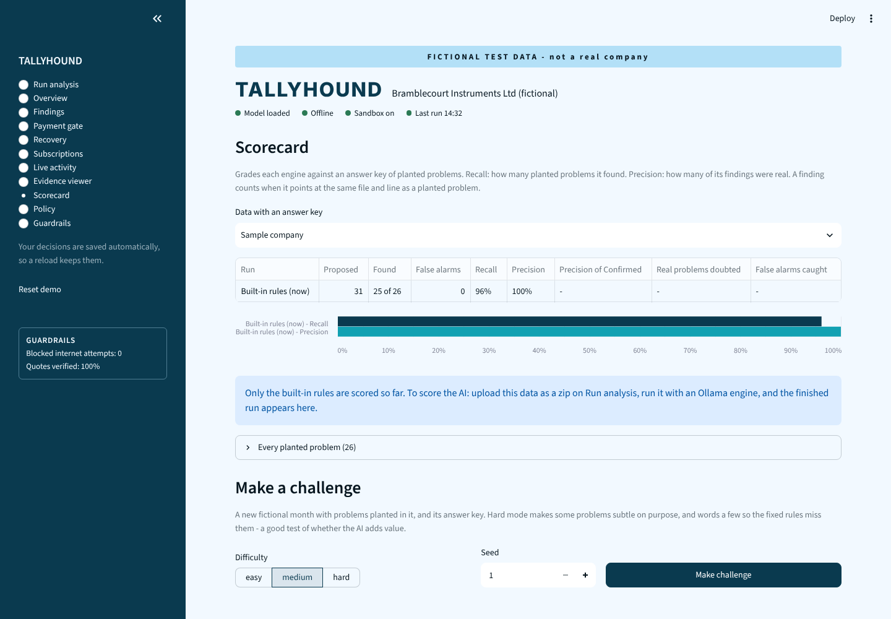
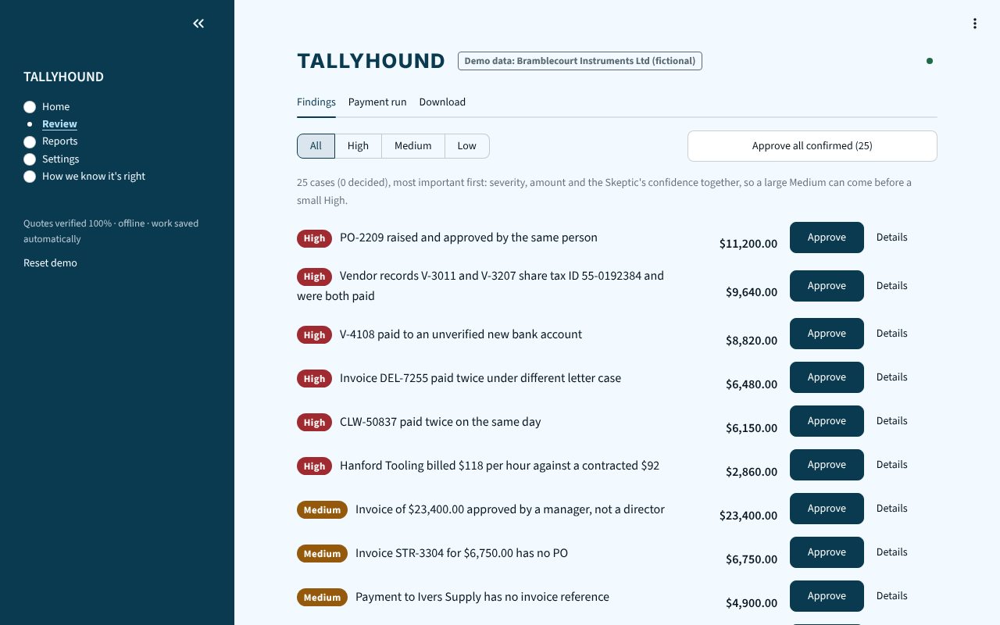

AI agents and fixed rules read your payables data and propose problems. Every quote is checked against the source file before anyone sees it, a second agent tries to disprove each finding, and a person makes every decision.
The Scorecard grades every engine against an answer key of planted problems and planted traps, and the build fails if a rule flags a trap. The challenge generator makes fresh fictional months; hard mode rewords problems so they no longer look like the rules' checks (the rules still miss one in each month), so it shows whether the AI adds anything.
AI engine results are measured on your own computer with python scripts/benchmark.py --engines ollama,ollama-tools; see docs/benchmark.md.


The AI runs on your own machine through Ollama (or LM Studio, vLLM). The analysis makes no cloud calls (alerts go only where you set them up); the Docker setup keeps everything on one server.
| Try it | Open the live demo and follow the guided tour. |
|---|---|
| On your computer | pip install -r requirements.txt then streamlit run app.py |
| On a server | docker compose up --build (app and Ollama together) |
| Every week | python scripts/watch.py FOLDER --alert from a scheduler, with Slack or email alerts |